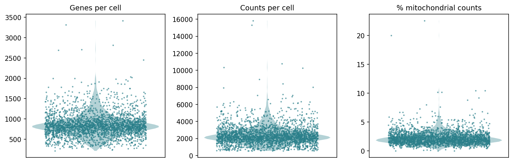
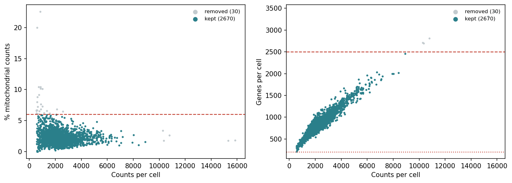
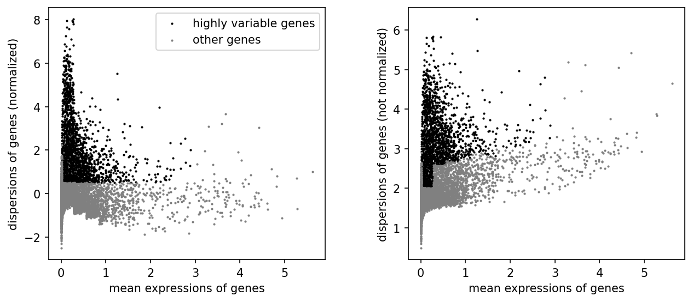
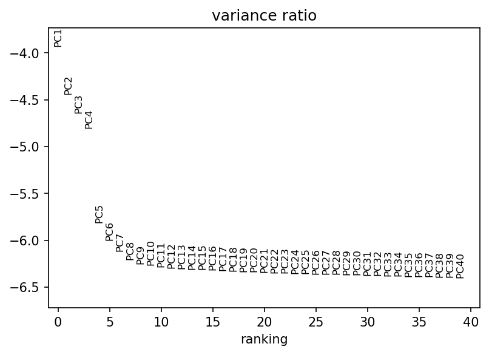
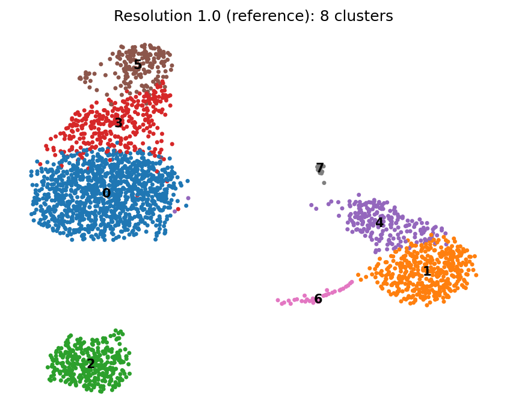
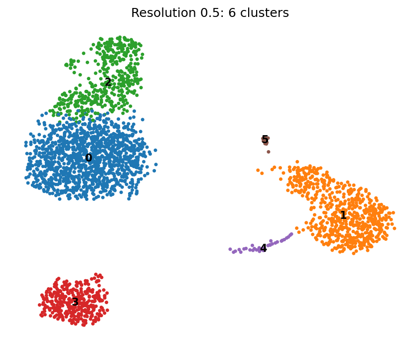
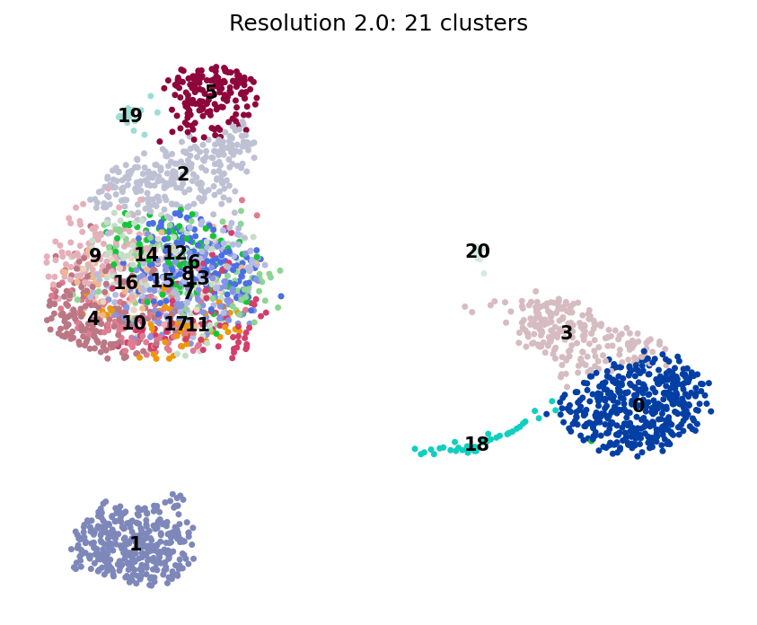
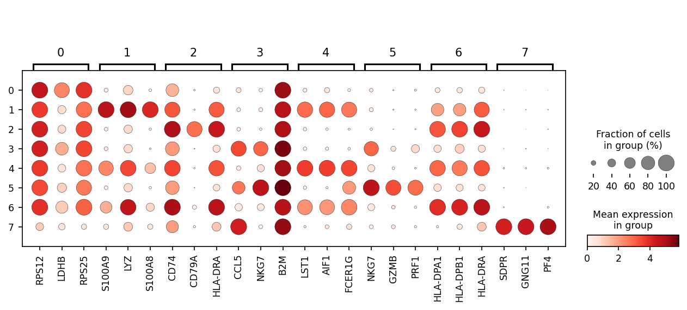
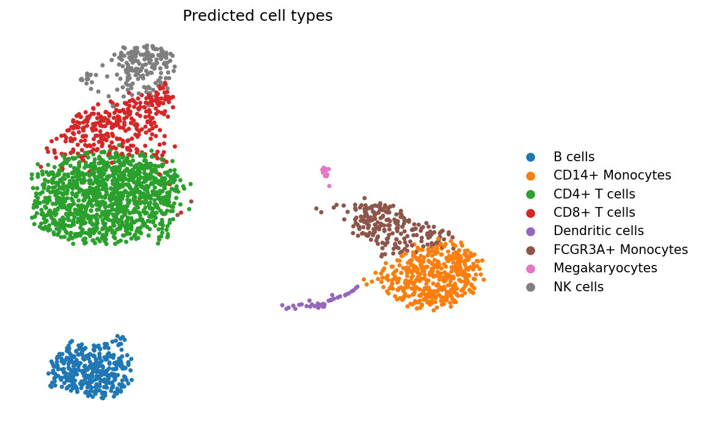

A guide to each stage and each setting in the PBMC3k analysis app: what it does
computationally, what it means biologically, what it did in the validated PBMC3k run, and how
to explain it.
Prepared for Aditi Vannela · 14 October 2026 · Analysis environment: Scanpy 1.11.5,
anndata 0.12.19, leidenalg 0.12.0, umap-learn 0.5.12 · Every PBMC3k number in this guide comes from
the validated run of the app's backend.
Part 1 The big picture
1.1 What scRNA-seq measures
1.2 The PBMC3k dataset
1.3 The workflow at a glance
Part 2 Data & QC tab
Part 3 Preprocessing tab
Part 4 PCA & UMAP tab
Part 5 Clustering tab
Part 6 Marker genes tab
Part 7 Cell types tab
Part 8 Reproducibility and validation
Part 9 Questions supervisors ask
Appendix A Every setting at a glance
Appendix B PBMC3k numbers at each step
Appendix C Glossary
Appendix D Further reading
Part 1
The big picture
1.1 What single-cell RNA-seq measures
Bulk RNA-seq measures the average expression of a tissue. Single-cell RNA-seq (scRNA-seq) measures
expression in each cell separately, so you can see which cell types are present, in what proportions,
and which genes define them.
PBMC3k was made with droplet-based technology (10x Genomics Chromium). The key ideas:
Droplets and barcodes. Cells are split into tiny oil droplets, each with a gel bead carrying
millions of copies of one unique cell barcode. Every RNA molecule captured in that droplet is tagged
with that barcode, so sequencing reads can be traced back to their droplet, and so to (usually) one cell.
UMIs. Each captured molecule also gets a random unique molecular identifier. PCR copies
of the same molecule share a UMI, so counting UMIs counts original molecules, not amplification copies.
The numbers in the matrix are UMI counts: whole numbers.
3′ capture. The 10x 3′ chemistry captures the polyadenylated 3′ end of mRNAs. It identifies genes
well but doesn't see full transcripts or isoforms.
The count matrix. The output is a table of cells × genes (here 2,700 × 32,738) of UMI counts.
It is extremely sparse: most entries are zero. Only a fraction of a cell's mRNA molecules is
captured (estimates vary widely with the chemistry, often well under half), so a gene that is truly expressed
at a low level is often recorded as 0 ("dropout").
Imperfections the workflow must handle.
Empty droplets containing only free-floating ("ambient") RNA.
Damaged or dying cells.
Doublets: two cells in one droplet.
Differences in capture efficiency between cells.
Technical noise.
Most of the settings in this guide exist to deal with one of these.
1.2 The PBMC3k dataset
PBMC3k is a public 10x Genomics dataset of about 2,700 peripheral blood mononuclear cells from a
healthy human donor. It is the standard teaching dataset for Scanpy and Seurat. PBMCs are the blood cells
with a single round nucleus, isolated by density-gradient centrifugation, which removes red cells and
most granulocytes (neutrophils, eosinophils). What remains, and what we expect to find:
Population
Typical share of PBMCs
Role
T cells (CD4+ helper, CD8+ cytotoxic)
~45–70%
Adaptive immunity: coordinating responses (CD4) and killing infected cells (CD8)
B cells
~5–15%
Antibody production; antigen presentation
NK cells
~5–15%
Innate killing of stressed, infected or tumor cells
Every default comes from your validated reference analysis, a clean, reproducible version of your
original PBMC3k notebook. Changing any setting is allowed and recorded; the app then shows "Settings differ
from the validated reference".
Part 2 · Tab: Data & QC
Loading the data and quality control
Quality control (QC) decides which barcodes represent real, intact, single cells, and which genes carry
enough information to keep. It is the step that most directly shapes everything downstream: a cell removed
here never comes back, and a damaged cell left in can form a misleading "cluster" of its own.
Load data
Load PBMC3kbutton · file: data/pbmc3k.h5ad
Opens the raw count matrix (cells × genes) stored as an .h5ad AnnData file.
Computation
Raw-count checks: the values must be non-negative whole numbers with no missing values,
and not all zero. Anything else means the file has already been processed (normalized, log-transformed,
scaled or batch-corrected), and running the workflow on it would process it twice.
Name checks: cell barcodes must be unique. Duplicate gene symbols are made unique (e.g. a
second TBCE becomes TBCE-1), as in your notebook.
Fingerprint: the file's SHA-256 checksum is recorded, which proves exactly which file
was analyzed.
Biology Analysis must start from raw UMI counts,
because later steps (normalization, HVG selection) assume count-like data. Gene symbols can repeat
because different genomic loci share a name; making them unique keeps every measurement.
In your PBMC3k run 2,700 cells × 32,738 genes, all values
whole numbers, 0 duplicate names needing a fix.
QC metrics
Run QCbutton · mitochondrial prefix "MT-" (fixed for human)
Flags mitochondrial genes and calculates three numbers for every cell.
Metric
What it counts
What it reveals biologically
Genes per cell (n_genes_by_counts)
Number of genes with at least one UMI in the cell
Library complexity. Very low suggests an empty droplet or a damaged cell; very high suggests a doublet.
Counts per cell (total_counts)
Total UMIs in the cell
How much RNA was captured. It reflects cell size and activity and capture efficiency.
% mitochondrial (pct_counts_mt)
Share of a cell's UMIs that come from the 13 mitochondrially encoded genes
Cell integrity. A high value usually indicates a damaged or dying cell.
Biology: why mitochondrial reads flag damaged cells
When a cell's outer membrane is damaged, its cytoplasmic mRNA leaks out of the droplet before capture,
but transcripts inside the mitochondria (enclosed in their own membranes) are retained. The
mitochondrial share of what's left therefore rises. High mitochondrial fractions are also
associated with apoptosis and cellular stress. Note that some healthy cell types naturally have more
mitochondrial RNA (for example metabolically very active cells, such as cardiomyocytes), so thresholds
depend on the tissue.
Computation Genes whose symbol starts with MT-
are flagged (this is the human convention; mouse uses mt-, which is why the prefix is a
setting). Scanpy's calculate_qc_metrics then computes the metrics. They are
calculated once, on all genes, before any filtering, and never recalculated. That matches your
notebook and the Scanpy tutorial, and the same values are used later by the regression step. If no
genes match the prefix, the app warns that mitochondrial QC is unavailable rather than showing
a misleading 0%, and it refuses to apply a mitochondrial filter until you fix the prefix or switch
the filter off.
In your PBMC3k run 13 mitochondrial genes (MT-ND1 … MT-CYB).
Medians per cell: 817 genes, 2,197 counts, 2.03% mitochondrial (range 0–22.6%),
identical to your original notebook's printed table.

QC violin plots, PBMC3k. Each dot is a cell.
Most cells cluster tightly; the long upper tails are the candidates for removal (possible doublets in
genes and counts; possibly damaged cells in % mitochondrial).
Filtering settings
Four thresholds, applied in this order (the same order as your notebook). The live preview shows what
they would remove before anything changes; Apply Filtering makes it real and records it.

Filtering preview, PBMC3k reference settings.
Teal = kept, grey = removed (30 cells). Red dashed lines: the upper limits (6% mitochondrial; 2,500 genes).
Red dotted line: the lower limit (200 genes). The right panel shows genes and counts rising together;
cells far above the trend at high counts are doublet candidates.
Min genes per cellreference: 200 · Scanpy filter_cells(min_genes)
Removes barcodes with fewer than 200 detected genes.
Biology A barcode with very few genes is usually an
empty droplet holding only ambient RNA (RNA released by lysed cells into the suspension), or a
badly damaged cell. Real cells express hundreds to thousands of genes. But some genuine cells are small
or transcriptionally quiet (platelets, some resting lymphocytes, neutrophils in whole-blood data), so a
threshold set too high removes real biology.
Computation Counts the genes with at least one UMI in each
barcode and keeps those with 200 or more. It runs first, before gene filtering.
In your PBMC3k run Removed 0 cells. The data had
already been through 10x's own cell calling, so empty droplets were largely excluded beforehand
(the minimum was 212 genes).
If you change it Raising it (e.g. to 500) removes more
low-complexity cells. Small, RNA-poor cell types are the most at risk, so rare populations can shrink or
disappear. Use the live preview to see how many cells a new value would remove. Lowering it to 0 keeps
everything the file contains.
How to explain it "We require at least 200 detected genes
per barcode to exclude empty droplets and debris. In PBMC3k this removed nothing, because the data
was already cell-called."
Min cells per genereference: 3 · Scanpy filter_genes(min_cells)
Removes genes detected in fewer than 3 of the remaining cells.
Biology Of the ~33,000 annotated genes, many aren't
expressed in blood at all (neuronal, muscle and liver genes, for example) or are captured too rarely
to measure. A gene seen in 1–2 cells carries no usable information about groups of cells, and may be noise.
Computation For each gene, counts the cells (among those that
passed the previous step) with at least one UMI, and keeps genes found in 3 or more. Removing genes
makes every later step faster and less noisy. The order matters: genes are counted after the
cell filter.
In your PBMC3k run Removed 19,024 genes, leaving
13,714. Most of the genome isn't detectably expressed in ~2,700 PBMCs.
If you change it Raising it removes rarely detected
genes, including markers of very rare populations: a population of 10 cells can only keep its
genes if the threshold is below 10. Lowering it to 0 keeps every gene.
How to explain it "Genes detected in fewer than 3 cells were
excluded as uninformative. Most were genes not expressed in blood."
Max genes per cell (+ "No limit")reference: 2,500 (cells must be below it)
Removes cells with 2,500 or more detected genes.
Biology A droplet that captured two cells (a doublet)
contains the RNA of both, so it shows more genes and counts than a single cell. Doublets can look like
fake "intermediate" cell types (e.g. a cell expressing both T-cell and monocyte genes). The doublet
rate rises with the number of cells loaded (very roughly ~0.8% per 1,000 cells recovered on 10x). An
upper gene limit is a simple proxy: it catches doublets of large, RNA-rich cells but misses
doublets of small cells, and it can wrongly remove genuinely large or active single cells.
Computation Uses the stored n_genes_by_counts
(calculated before gene filtering) and keeps cells strictly below the limit. Ticking No limit
switches this filter off entirely; this is recorded in the analysis history.
In your PBMC3k run Removed 5 cells.
If you change it A lower limit removes more suspected
doublets but also more large single cells. Dedicated doublet-detection methods (e.g. Scrublet,
scDblFinder) simulate doublets and score each cell. They are more principled and are a natural future
addition, but they are not part of your reference analysis.
How to explain it "Cells with 2,500 or more genes were removed
as likely doublets. This is a simple heuristic; a dedicated doublet detector would be more precise."
Max % mitochondrial (+ "No limit")reference: 6% (cells must be below it)
Removes cells whose mitochondrial share is 6% or more.
Biology High mitochondrial fraction signals damaged, leaky or
dying cells (see "QC metrics" above). Such cells can cluster by their damage rather than by their
identity, creating misleading clusters defined by stress genes. Sensible thresholds depend on tissue and
species: PBMCs are low in mitochondrial RNA, so a strict threshold like 5–6% is common for them, while
many human tissues need 10–20%.
Computation Uses the stored pct_counts_mt and keeps
cells strictly below the limit. If mitochondrial QC is unavailable (no MT- genes), the app
refuses this filter rather than treating every cell as passing.
In your PBMC3k run Removed 25 cells (the Scanpy
tutorial uses 5%; your analysis uses 6%). Trying 5% in the preview removes 57 cells instead.
If you change it Stricter thresholds remove more damaged
cells but can also remove healthy cells with naturally high mitochondrial content. An alternative,
data-driven approach flags cells several median absolute deviations (MADs) above the median.
How to explain it "Cells with 6% or more mitochondrial reads were
excluded as likely damaged. PBMCs have low mitochondrial content, so a strict cut-off is appropriate
here; it removed 25 cells."
Filtering result2,670 cells × 13,714 genes, matching
your original notebook exactly. The app keeps this filtered object (all genes, raw counts) for the whole
analysis, so full-gene raw counts are always available. Reset to reference settings restores
200 / 3 / 2,500 / 6.
Part 3 · Tab: Preprocessing
Normalization, highly variable genes, regression and scaling
Preprocessing turns raw counts into numbers that can be compared fairly between cells. It also picks
out the genes that carry biological signal. Order: normalize → log-transform → find highly variable genes
→ store all genes in raw → keep HVGs → (optionally) regress out technical effects → scale.
Target sum per cellreference: 10,000 · normalize_total then log1p
Rescales every cell so that its counts add up to 10,000, then takes log(1 + x).
Biology Two identical cells can yield very different totals,
because capture and sequencing efficiency vary from droplet to droplet. Without normalization, a cell's
"expression" of every gene would partly reflect how well it was captured. Normalization asks "what share
of this cell's RNA is gene X?" rather than "how many molecules of X did we happen to catch?". A caveat:
genuinely larger or more active cells really do contain more RNA, and total-count normalization removes
that difference too.
Computation
Normalize: each count is divided by the cell's total and multiplied by 10,000 ("counts per
10,000", CP10k).
Log-transform: log1p = log(x + 1); the +1 keeps zeros at zero. It compresses the huge range
of expression values and stabilizes variance, so a few highly expressed genes don't dominate. It also
makes differences multiplicative: a 2-fold change looks the same at any expression level.
The counts are kept: raw counts are saved in layers["counts"] before any of this.
Alternatives used in the field include median-based scaling, pooling-based size factors (scran),
SCTransform and analytic Pearson residuals. Your reference uses the classic CP10k + log1p.
In your PBMC3k run The median cell had 2,206 counts
before normalization (after filtering); every cell now sums to 10,000 before the log.
If you change it It changes the scale of all values but
mostly preserves the relative pattern between cells; downstream HVG selection can shift slightly. It's
rarely changed except to match another analysis's convention (e.g. 1,000,000 = CPM).
How to explain it "Counts were normalized to 10,000 per cell
and log-transformed, to correct for differences in sequencing depth between cells."
Highly variable genes (HVGs)
Most genes behave the same in every cell type (housekeeping genes) or are too sparsely measured to be
informative. Cell identity is written in the genes that vary more than expected between cells.
Focusing on them sharpens the biological signal and reduces noise and computation. Three settings define
them (Scanpy's seurat method):
How the seurat method works
For each gene, compute its mean expression and its dispersion (variance ÷ mean), on the
normalized scale, then take logs.
Sort genes into 20 bins by mean expression.
Within each bin, convert dispersion into a z-score: the normalized dispersion. This asks "is
this gene more variable than other genes expressed at a similar level?". That matters because in count
data variability naturally depends on expression level.
Keep genes inside the mean window whose normalized dispersion is above the minimum.
HVG min meanreference: 0.0125
Biology Excludes genes so rarely detected that their apparent
variability is mostly sampling noise (dropout), not biology.
If you change it Lower values admit more low-expressed genes.
This can add genuine markers of small populations, but also noise. Higher values focus on robustly
measured genes.
HVG max meanreference: 3
Biology Excludes the very highest-expressed genes (often
housekeeping or ribosomal genes) whose variation says little about cell identity and could dominate the
analysis.
If you change it Raising it admits very abundant genes.
Some genuine markers are highly expressed (e.g. LYZ in monocytes), and they still count for
marker testing, which uses all genes.
HVG min dispersionreference: 0.5 (normalized dispersion)
Biology The core criterion: keep genes that are at least
half a standard deviation more variable than genes of similar expression. These are the genes most
likely to differ between cell types or states.
If you change it Lower means more HVGs (more signal but
more noise); higher means fewer, more strongly variable genes. A common alternative is to request a
fixed number (e.g. top 2,000).
In your PBMC3k run1,846 HVGs out of 13,714 genes,
identical to the validated notebook.

Highly variable genes, PBMC3k. Each dot is one
of the 13,714 genes. Left: normalized dispersion vs mean expression. Right: raw dispersion. Black = selected
HVGs (inside the mean window and above the dispersion cut-off); grey = not selected.
Kept automatically: all genes in "raw" Before the data is
reduced to the 1,846 HVGs, the log-normalized values of all 13,714 genes are stored in
adata.raw. Marker testing (Part 6) uses these, so a gene can be found as a marker even if it
wasn't an HVG, and marker results aren't distorted by regression or scaling.
Regress out total counts and % mitochondrialreference: on · regress_out
For each HVG, removes the part of its expression explained by the cell's total counts and its
mitochondrial share.
Computation For each gene separately, a linear model predicts
its expression from total_counts and pct_counts_mt (as calculated at QC). The
gene's values are replaced by the residuals: what's left after that prediction. It's the slowest
preprocessing step.
Biology, and the trade-off The aim is to stop technical
factors (capture depth, mild damage) from driving clusters. The risk: if a real cell type naturally has
more RNA or more mitochondria, regressing those factors out also removes part of the biology that
distinguishes it. The field has moved away from routine regression (current best-practice reviews treat it
as optional, mainly for strong, well-understood confounders such as the cell cycle).
In your PBMC3k run On, because your original analysis used it.
It is required to reproduce your results exactly.
If you change it Turning it off changes every downstream result
(PCA, clusters, UMAP). It does not change the marker gene values, which come from raw,
but it can change which cells end up in which cluster. It's a legitimate analysis choice, and it's recorded.
How to explain it "We regressed out total counts and mitochondrial
percentage to reduce technical variation, as in the original analysis. This is optional, and can remove
biology correlated with those factors, so the app makes it a visible setting."
Turns each gene into a z-score (mean 0, standard deviation 1 across cells) and caps values at ±10.
Computation Without scaling, PCA would be dominated by the most
highly expressed genes, simply because their numbers are larger. Scaling gives every HVG equal weight. The
cap stops a handful of extreme cells (e.g. the only cells expressing a gene) from pulling a whole principal
component toward themselves.
Biology Equal weighting means a modest but consistent difference in a
transcription factor counts as much as a large difference in an abundant gene. That's usually what you want
for finding cell types. The trade-off is that noisy genes are amplified too, which is why HVG selection
happens first.
In your PBMC3k run4,540 values were capped, out of ~4.9
million (2,670 × 1,846): under 0.1%.
If you change it Rarely needed. A lower cap reduces the
influence of rare high-expressing cells; no cap lets them dominate.
Part 4 · Tab: PCA & UMAP
Principal components, the neighbor graph, and UMAP
Even 1,846 genes are too many dimensions to compare cells directly: noise accumulates across genes
and distances become uninformative. This stage compresses the data, connects similar cells, and draws a
picture.
Number of PCsreference: 40 · pca(n_comps=40, svd_solver="arpack", random_state=0)
Principal component analysis (PCA) finds new axes, principal components (PCs), that capture the largest
patterns of genes varying together.
Computation PCA rotates the scaled data so that PC1 captures the
most variance, PC2 the next most (and is uncorrelated with PC1), and so on. Each cell gets a coordinate on
each PC; each gene gets a weight ("loading") on each PC. Keeping the first PCs and discarding the rest
removes much of the gene-level noise.
Biology Early PCs typically separate the biggest biological
differences. In PBMCs: lymphoid vs myeloid cells, then T/NK vs B, monocyte subtypes, and so on. Later PCs
capture finer distinctions (e.g. dendritic cells, platelets), then mostly noise. The genes with the
largest loadings on a PC tell you what biology it represents.
In your PBMC3k run 40 PCs explain 11.5% of the total
variance. That sounds low but is normal for single-cell data, where most variance is technical sampling
noise spread across genes. Why 40: your original notebook never called PCA explicitly; Scanpy
computed it inside the neighbors step using n_pcs=40, so 40 is what was actually used. The
app makes this step explicit and visible, with identical results.
If you change it Too few PCs can merge populations whose
distinguishing pattern lives in a later PC (rare types are most at risk). Too many add noise; results are
usually fairly robust above ~20–30 for PBMCs. Use the elbow plot: where the curve flattens, extra PCs add
little.
How to explain it "We reduced the 1,846 scaled HVGs to 40
principal components, which capture the main axes of biological variation, and used them to compare cells."

Variance explained per PC (log scale). Steep early decline
(major biological axes), then a long flat tail (finer structure and noise).

UMAP of PBMC3k, colored by the 8 Leiden clusters at the
reference resolution.
Number of neighborsreference: 10 · neighbors(n_neighbors=10)
For every cell, finds its 10 most similar cells and links them, building the neighbor graph.
Clustering and UMAP both work on this graph, not on the raw data.
Computation Similarity is Euclidean distance in PC space. For
datasets under ~4,000 cells, Scanpy computes neighbors exactly (otherwise it uses a fast approximation).
The graph's connection strengths ("connectivities", between 0 and 1) come from the UMAP method: close
neighbors get strong links, farther ones weaker.
Biology The graph encodes "these cells have similar
transcriptomes", the operational definition of being the same cell type or state. The number of
neighbors sets the scale: small values emphasize fine local structure (subtypes, states); large values
emphasize broad structure (major lineages).
If you change it Smaller values usually give more, smaller
clusters and a more fragmented UMAP. Larger values give smoother results, but small populations can be
absorbed. Your platelet cluster has 13 cells, so with far more than 13 neighbors each platelet would be
forced to link to many non-platelets.
How to explain it "Each cell was connected to its 10 nearest
neighbors in PCA space; clusters and the UMAP are derived from this graph."
Advanced: PCs used for the neighbor graphreference: 40 · must be ≤ number of PCs
How many of the computed PCs the neighbor graph uses. Separate from "Number of PCs" so you can compute
more PCs to inspect (say 50) but build the graph from fewer (say 30). Entering more than you computed
gives a clear message instead of an error.
Fixed settings (recorded, not shown on screen) Random seed 0
for PCA, the graph and UMAP; PCA solver arpack (Scanpy's default for this data, written out so a
future Scanpy default change can't silently alter results); Euclidean distance; UMAP's standard defaults
(min_dist 0.5, spread 1.0, spectral initialization). Fixed seeds make runs exactly repeatable.
UMAP
UMAP (drawn automatically by "Run PCA & UMAP")umap(random_state=0)
UMAP (Uniform Manifold Approximation and Projection) lays the neighbor graph out in 2-D so that connected
cells sit close together.
How to read a UMAP, and how not to
It is for looking, not measuring. Local neighborhoods are meaningful: cells in one blob are similar.
Distances between clusters, cluster sizes on the plot, and empty space are not reliable.
Two far-apart blobs aren't necessarily more different than two nearby ones.
It changes with the random seed and settings.
A UMAP that "looks like" another one is not evidence that two analyses agree. That is why the app
compares cluster assignments and markers, never pictures.
A finding from building the app Scanpy's UMAP quietly
prunes the weakest edges of the neighbor graph as a side effect. If clustering runs after UMAP, it
clusters a slightly different graph: in PBMC3k, ~21 cells moved between the T and NK clusters. Your notebook
clustered before UMAP. The app now restores the true graph after drawing UMAP, so clusters are identical
whichever order the steps run in. This is a good example of why the app checks results numerically rather
than visually.
Part 5 · Tab: Clustering
Leiden clustering
Clustering divides the neighbor graph into groups of cells that are more connected to each other than to
the rest: communities in a social network. These groups are candidate cell types or states;
naming them happens later, from marker evidence.
Resolutionreference: 1.0 · leiden(resolution=1.0)
Controls how finely the graph is divided. Higher resolution gives more, smaller clusters; lower gives
fewer, larger ones.
Computation The Leiden algorithm searches for the partition of
the graph that maximizes a quality score: roughly, the number of connections inside clusters compared with
what you'd expect by chance. The resolution parameter changes how strongly that "expected by chance" term
counts, and so how large the clusters tend to be. Leiden improves on the older Louvain method by
guaranteeing that clusters are internally well connected.
Biology There is no single "correct" number of clusters. Cell
identity is hierarchical: lymphoid → T cell → CD4 T → naive or memory CD4 T. Resolution chooses the level of
the hierarchy you look at. Over-clustering splits one cell type into states (activation, cell cycle) or into
technically driven groups; under-clustering merges distinct types (e.g. CD4 and CD8 T cells, or DCs into
monocytes). The right resolution is the one at which clusters are biologically interpretable and supported by
distinct markers.
In your PBMC3k run Resolution 1.0 gives 8 clusters of
1,131 / 430 / 342 / 326 / 214 / 178 / 36 / 13 cells, identical to the validated notebook (every one of the
2,670 cells is in the same cluster). Cluster numbers are labels only: "0" is simply the largest.
If you change it The same data at three resolutions:

0.5: 6 clusters. Several populations merge (e.g. the two monocyte groups).1.0 (reference): 8 clusters, matching the known PBMC populations.

2.0: 21 clusters, splitting cell types into sub-states.
Note that the B-cell cluster (342 cells) and the platelet cluster (13 cells) are identical at 0.5 and 1.0. Very
distinct populations are stable across resolutions; that stability is itself evidence they are real.
How to explain it "Cells were clustered with the Leiden algorithm
on the neighbor graph at resolution 1.0, giving 8 clusters. Resolution controls granularity; we chose the
level at which clusters correspond to interpretable cell types with distinct markers."
Fixed settings (recorded) Implementation leidenalg
(pinned: Scanpy plans to switch its default to igraph, a different implementation that can give
different clusters); iterations −1 (run until the result stops changing); graph treated as directed (the
leidenalg default); random seed 0. With the seed fixed, the same input always gives the same clusters.
Part 6 · Tab: Marker genes
Marker genes: what distinguishes each cluster
A cluster is just a group of cells. Marker genes, those much more active in one cluster than in the
rest, are what tell you what the group is. This step ranks every gene for every cluster.
The statistical test used to compare each cluster with all other cells ("one versus rest").
Computation
The test: for each cluster and each of the 13,714 genes (from raw: log-normalized,
not regressed or scaled), the Wilcoxon rank-sum test asks whether the gene's values tend to rank
higher in the cluster than in all other cells.
Why Wilcoxon: it uses ranks, not raw values, so it doesn't assume a bell-shaped distribution.
That suits sparse, zero-heavy single-cell data, and it is robust to outliers.
The t-test option: it compares means instead. It's faster but assumes roughly normal data.
Correction: p-values are adjusted for testing thousands of genes (Benjamini–Hochberg).
Biology Good markers combine three things: high specificity
(expressed in this cluster, rarely elsewhere), a large effect, and broad expression within the cluster.
Classic cell-type markers (e.g. CD79A for B cells) score highly on all three.
Reading the results
Column
Meaning
How to use it
Rank
1 = most distinctive gene for this cluster
Read the top 10–25 for identity
Score
The test statistic (a z-score); higher = more consistently higher in the cluster
Determines the ranking
Log fold change
log2 of (mean expression in cluster ÷ mean elsewhere)
Effect size: 1 = 2-fold, 3 = 8-fold higher
% in cluster / % in other cells
Share of cells with any expression, inside vs outside
Specificity: e.g. CD79A is 94% in B cells vs 4% elsewhere
Adjusted p (ranking only)
Benjamini–Hochberg-corrected p-value
See the caveat below; don't report as significance
The statistical caveat everyone should know: "double dipping" The
clusters were defined from these same cells' expression. Testing for differences between groups that were
built to be different is circular, so p-values come out far too small (in PBMC3k, as low as 10−200).
They are still useful for ranking candidate markers, but they are not evidence that a difference is real.
Formally valid inference requires different methods (e.g. held-out data, or approaches designed for
post-clustering testing). For comparing conditions (e.g. patients vs controls), the field uses
pseudobulk testing with biological replicates, a future feature.

Top 3 marker genes per cluster. Dot size =
% of cells in the cluster expressing the gene; color = mean expression. The diagonal blocks show each cluster's
own markers. Examples: cluster 1 (S100A9, LYZ, S100A8: classical monocytes), cluster 2 (CD74, CD79A, HLA-DRA:
B cells), cluster 5 (NKG7, GZMB, PRF1: NK cells), cluster 7 (SDPR, GNG11, PF4: platelets). The app draws this
without a dendrogram, so clusters keep their own order and no extra clustering is run behind the scenes.
In your PBMC3k run The full ranking of all 13,714 genes in all 8
clusters is identical to the validated notebook (scores, fold changes and p-values to the last digit). Note cluster
0's top genes are ribosomal proteins and LDHB. That is typical of naive/resting T cells, and it's why CD4
identity is judged from specific markers (IL7R, CCR7) further down the list.
How to explain it "Marker genes were ranked for each cluster
against all other cells using the Wilcoxon rank-sum test on log-normalized expression of all genes. Because the
clusters were derived from the same data, p-values are used only to rank genes, not as significance tests."
Part 7 · Tab: Cell types
Predicting cell types from marker evidence
This step proposes a cell type for each cluster, the way an expert would ("high CD79A and MS4A1,
so B cells"), but written down, repeatable, and with its evidence shown. Crucially, it never assigns labels by
cluster number. Cluster numbering can change with software versions or seeds, so labels must come from the
data.
The marker sets
The app scores each cluster against canonical PBMC marker sets. The biology behind each:
Cell type
Markers
What the genes are
CD4+ T cells
IL7R, CCR7
IL7R = CD127, the IL-7 receptor needed for T-cell survival (high on naive and memory CD4 T). CCR7 = a chemokine receptor that homes naive and central-memory T cells to lymph nodes.
CD8+ T cells
CD8A, CD8B
The two chains of the CD8 co-receptor, which binds MHC class I: the defining feature of cytotoxic T cells.
NK cells
GNLY, NKG7
GNLY = granulysin, an antimicrobial and cytotoxic protein in killing granules. NKG7 = a granule protein that controls their release. (Also present in cytotoxic CD8 T cells.)
B cells
MS4A1, CD79A
MS4A1 = CD20, the classic B-cell surface marker (the target of rituximab). CD79A = Igα, the signaling part of the B-cell receptor.
CD14+ Monocytes
CD14, LYZ
CD14 = co-receptor for bacterial lipopolysaccharide; defines classical monocytes. LYZ = lysozyme, an antibacterial enzyme abundant in myeloid cells.
FCGR3A+ Monocytes
FCGR3A, MS4A7
FCGR3A = CD16, an antibody (Fc) receptor that defines non-classical monocytes. MS4A7 = a monocyte-associated membrane protein.
Dendritic cells
FCER1A, CST3
FCER1A = the high-affinity IgE receptor α chain, on conventional type-2 DCs (and basophils). CST3 = cystatin C, high in DCs (and monocytes).
Megakaryocytes / platelets
PPBP
Pro-platelet basic protein (CXCL7), stored in platelet granules.
CD3D (part of the T-cell receptor complex, present on all T cells) is shown as context but
not used for scoring: it can't distinguish CD4 from CD8 T cells. The marker sets are settings, not code, so other
tissues or species can use other sets.
How a cluster is scored
For each marker gene, take its average expression in the cluster (log-normalized, from raw).
Turn it into a z-score across clusters: how far above or below the average cluster this cluster is,
in standard deviations. +2 means "far higher than typical".
A cell type's score is the average z-score of its markers. B cells score 2.64 in cluster 2 because
MS4A1 and CD79A are far above average there.
The best-scoring type is proposed, only if it passes three checks. Otherwise the cluster stays
"Unresolved", and its best candidate is still shown.
Advanced: Ambiguity marginreference: 0.5
The best score must beat the second-best by at least this much; otherwise the cluster is ambiguous.
Biology Protects against confident-sounding labels for mixed or
intermediate clusters: doublets, transitional states, or populations sharing markers (e.g. cytotoxic CD8 T vs NK
cells, which share NKG7/GNLY).
In your PBMC3k run The smallest margin was 1.32 (dendritic cells vs
CD14+ monocytes, which share CST3/LYZ), well above 0.5. No cluster was ambiguous.
Advanced: Top-N marker rankreference: 50
At least one of the proposed cell type's markers must be among the cluster's top 50 marker genes; otherwise the
cluster is unsupported.
Biology Two kinds of evidence must agree: the scoring (relative
expression across clusters) and the marker test (what actually distinguishes this cluster). A label that wins the
score but isn't backed by the cluster's own top genes deserves suspicion.
In your PBMC3k run Every label was supported. The weakest support was
CD4+ T cells (IL7R at rank 43), because the cluster's top genes are ribosomal.
Advanced: Conflict threshold (z)reference: 1.0 · display only
Lists another cell type's marker as "conflicting" when its z-score in the cluster is at least 1.0. Evidence only:
it never changes a label.
In your PBMC3k run
CST3 (a DC marker) in both monocyte clusters. Expected: monocytes express cystatin C.
IL7R and NKG7 in the CD8 cluster. It's a cytotoxic/memory population.
FCGR3A in NK cells. Expected: CD56-dim NK cells express CD16.
LYZ in dendritic cells, shared with monocytes.
These match your manual review.
Limitation Conflicts are judged on cluster averages, so a minority
subpopulation is invisible. For example, ~19% of cells in the CD4 cluster express CD8A/CD8B; your manual
review caught this, the algorithm can't.

Predicted cell types, PBMC3k. All 8 clusters
"confident". These are predictions from marker evidence, not analyst-reviewed labels.
Predicted labels vs your reviewed labels
The app keeps two kinds of label strictly separate:
Predicted
Analyst-reviewed (your review, 8 Oct 2026)
Source
The algorithm, from marker evidence
Your expert judgement of the evidence
Used for
The app, any dataset
Validating the app on PBMC3k only
Status
A reproducible proposal
Working labels, not independently validated ground truth
Your review refined four labels: CD4-enriched T cells (19% of cells express CD8 genes),
Cytotoxic/memory T cells (CD8-enriched) (43% lack detectable CD8A/B; cytotoxic program shared with NK),
Conventional dendritic cells (cDC2-enriched) (FCER1A/CLEC10A/CD1C; a few plasmacytoid DCs mixed in), and
Platelet-lineage cells rather than "megakaryocytes" (mature megakaryocytes rarely circulate; these 13 cells
are most plausibly platelets). The app's predictions agree with your review for 100% of cells.
How to explain it "Cell types were predicted for each cluster by
scoring canonical marker sets, with checks for ambiguity and marker support. Unclear clusters are left
unresolved. Predictions were then compared with an independent manual review, and agreed for all cells. Neither
is a claim of definitive biological identity."
Part 8
Reproducibility and validation
Why a validated reference was needed
The original notebook had been run out of order: regression and scaling ran after neighbors and
clustering in the saved session, so its saved results couldn't be reproduced exactly.
PCA was hidden inside another step (it used 40 components, not the 50 often assumed).
Package versions weren't recorded.
A clean, validated version (scrna-seq-validated.ipynb) reproduces every value the original saved, and
became the answer key.
How the app is checked
Bit-identical to the reference: the whole analysis through the app matches the validated notebook exactly:
QC values, the 1,846 HVGs, PCA, the neighbor graph, UMAP, all 2,670 cluster assignments, all marker rankings, and
every predicted label.
Computes, doesn't memorize: the analysis code contains no PBMC3k answers. An automatic check scans for them.
It was also run in a folder with no answer key present and still produced identical results; and every step is tested
on other data and settings against direct Scanpy calls.
246 automated tests run in about 30 seconds.
Every run records its settings, random seeds, package versions, the input file's fingerprint, and a
timestamped history of each step.
Hidden behaviors found and handled
UMAP prunes the neighbor graph in place (Part 4): the true graph is now restored.
Some Scanpy plots write into the data: the UMAP plot stores colors; the marker dot plot runs an extra
hierarchical clustering. The app plots from copies and switches the extra clustering off.
Implicit defaults are written out (PCA solver, Leiden implementation and direction, marker-test options),
each verified to give identical results, so a future software update can't silently change the analysis.
Part 9
Questions supervisors ask, and good answers
"How did you choose the QC thresholds?"
They come from the original analysis and follow the standard PBMC3k workflow: ≥200 genes (excludes empty droplets),
<2,500 genes (simple doublet proxy), <6% mitochondrial (damaged cells; PBMCs are low in mitochondrial RNA). Together
they removed 30 of 2,700 cells. The app previews any alternative before applying it.
"Isn't regressing out total counts removing biology?"
It can, which is why it's an explicit setting rather than hidden. It's kept on to reproduce the original analysis;
current best practice treats it as optional. Marker genes are computed from unregressed data either way.
"Why 8 clusters? How do you know that's right?"
The number follows from resolution 1.0, not from a target. At 0.5 there are 6 clusters, at 2.0 there are 21. At 1.0
every cluster has distinct canonical markers and maps onto a known PBMC population; the most distinct populations (B cells,
platelets) are stable across resolutions. "Right" means interpretable and supported by markers, not unique.
"Two clusters are close on the UMAP. Are they similar?"
Not necessarily. UMAP preserves local neighborhoods but not global distances. Similarity is assessed from the neighbor
graph, clusters and markers, not from distances on the plot.
"Are the marker p-values significant?"
They are used only for ranking. The clusters were defined from the same data ("double dipping"), so p-values are
inflated. Biological claims rest on effect size, specificity and known biology.
"How do you know the app gives the right answer?"
It reproduces a validated reference analysis exactly, cell by cell and gene by gene; it is tested on other data
against direct Scanpy calls; and it records every setting, seed and software version. Agreement with the reference shows
correct implementation; biological interpretation still rests on marker evidence and expert review.
"Are the cell-type labels definitive?"
No. They are predictions from marker evidence, reviewed by an analyst. Some clusters are mixtures (e.g. CD8-expressing
cells within the CD4 cluster). Definitive identity would need orthogonal evidence: protein markers (CITE-seq, flow
cytometry), a reference atlas, or finer subclustering.
"What would you add next?"
Doublet detection (e.g. Scrublet), reference-based annotation (e.g. CellTypist), multiple samples with pseudobulk
differential expression, other file formats, and an export of the analysis with its full record. All are planned after
the PBMC3k prototype.
Appendix A
Every setting at a glance
Tab
Setting
Reference
Raise it →
Lower it →
Data & QC
Min genes per cell
200
Removes more low-complexity cells (risk: small cell types)
CD4+ T (1,131), CD14+ Mono (430), B (342), CD8+ T (326), FCGR3A+ Mono (214), NK (178), DC (36), Megakaryocytes/platelets (13): all confident
Appendix C
Glossary
Term
Meaning
AnnData / .h5ad
Scanpy's data container: the cells × genes matrix plus everything attached to it (QC metrics, clusters, coordinates, results); .h5ad is its file format.
Ambient RNA
Free-floating RNA from lysed cells, captured in every droplet; background contamination.
Barcode
DNA tag identifying the droplet (and so the cell) a read came from.
Doublet
A droplet containing two cells, which looks like one cell with mixed identity.
Dropout
A gene that is expressed but recorded as 0 because its molecules weren't captured.
Dispersion
Variance divided by mean; a measure of variability relative to expression level.
Double dipping
Testing a hypothesis on the same data used to generate it, which inflates significance.
HVG
Highly variable gene: more variable across cells than genes of similar expression.
Leiden
Graph community-detection algorithm used for clustering.
Log fold change
log2 ratio of mean expression between two groups.
Neighbor graph
Network linking each cell to its most similar cells; the basis of clustering and UMAP.
Normalization
Rescaling counts so cells with different sequencing depth are comparable.
PCA / PC
Principal component analysis: new axes capturing the largest patterns of co-varying genes.
Pseudobulk
Summing counts per cell type per sample, then using bulk methods; the right approach for comparing conditions across replicates.
Regression (regress_out)
Removing the part of each gene's expression explained by technical covariates.
Resolution
Clustering parameter controlling how many clusters are found.
Seed (random_state)
Number fixing the random choices of an algorithm, making results repeatable.
UMAP
2-D visualization of the neighbor graph; local structure is meaningful, global distances are not.
UMI
Unique molecular identifier: random tag that lets each original mRNA molecule be counted once.
Wilcoxon rank-sum test
Non-parametric test of whether values in one group tend to rank higher than in another.
z-score
Number of standard deviations a value is above (positive) or below (negative) the mean.
Appendix D
Further reading
Luecken & Theis (2019). Current best practices in single-cell RNA-seq analysis: a tutorial. Molecular Systems Biology.
Heumos et al. (2023). Best practices for single-cell analysis across modalities. Nature Reviews Genetics. Companion online book: "Single-cell best practices".
Satija et al. (2015). Spatial reconstruction of single-cell gene expression data. Nature Biotechnology (origin of the "seurat" HVG approach).
Zhang, Kamath & Tse (2019). Valid post-clustering differential analysis for single-cell RNA-seq. Cell Systems (the double-dipping problem).
Wolock, Lopez & Klein (2019). Scrublet: computational identification of cell doublets. Cell Systems.
Hafemeister & Satija (2019). Normalization and variance stabilization of scRNA-seq data using regularized negative binomial regression (sctransform). Genome Biology.
Osorio & Cai (2021). Systematic determination of the mitochondrial proportion in human and mice tissues for single-cell RNA-sequencing data quality control. Bioinformatics.
Scanpy PBMC3k tutorial ("Preprocessing and clustering 3k PBMCs"), scanpy.readthedocs.io.